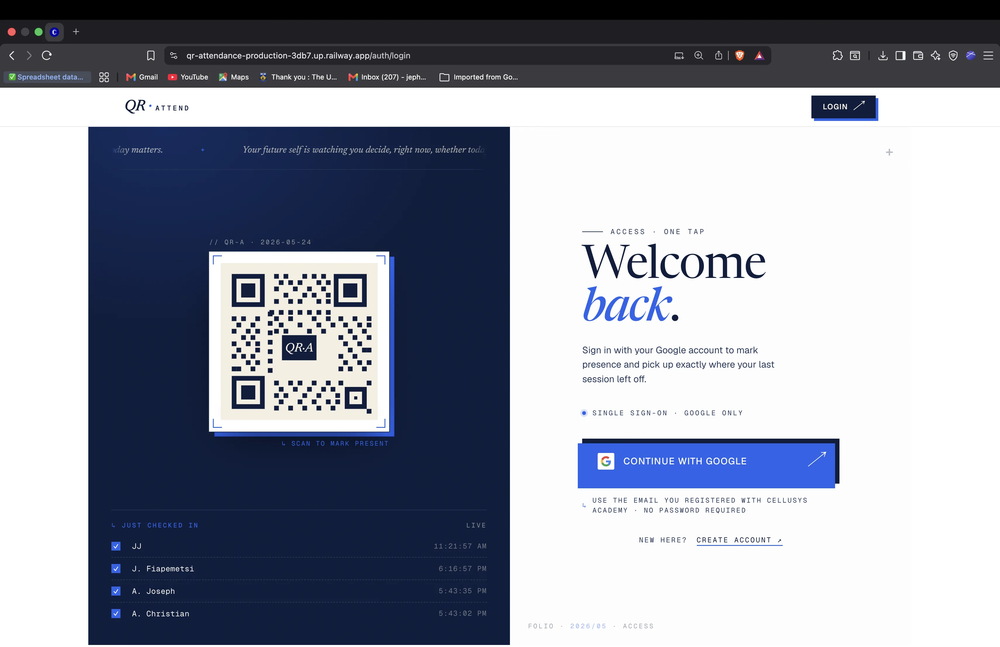
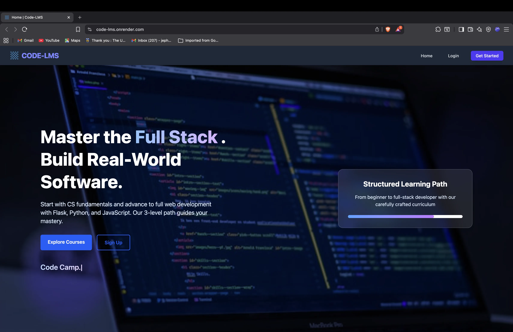
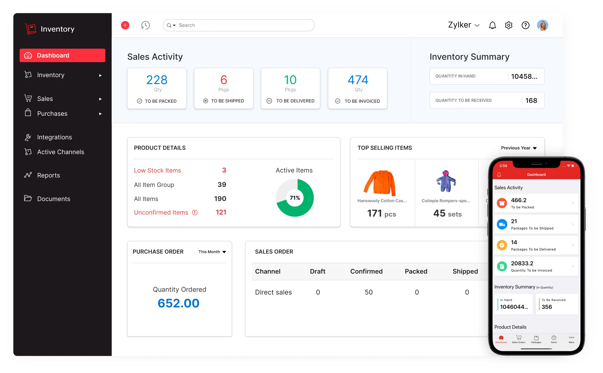
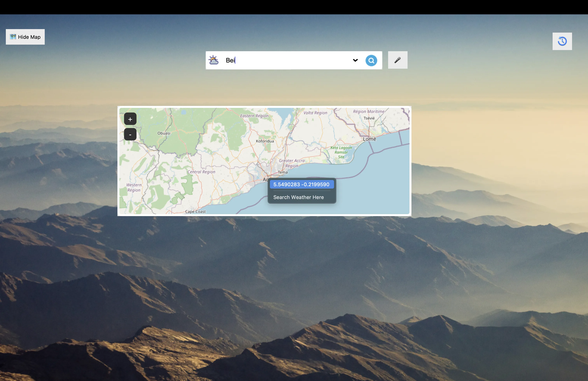
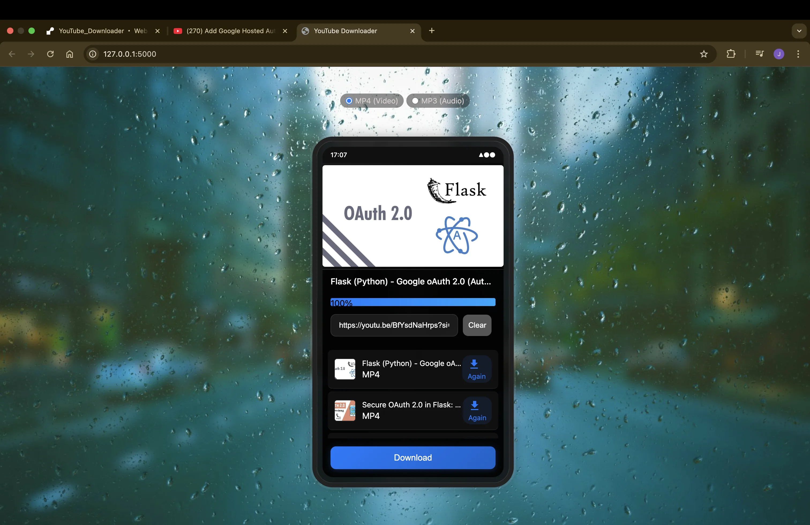

Open to Work
I'm Jefferson Ampadu, a software developer who builds web and full-stack applications that are fast, functional, and production ready. I specialize in turning ideas into reliable, scalable software, the kind that helps businesses run more efficiently and reach more people online. I care about the craft: clean architecture, precise execution, and shipping things that actually work.
Full-stack apps built for production — not demos. From data models and auth to responsive UI, I own the whole stack using Python, Flask, FastAPI, and PostgreSQL.
Scalable API design with proper auth, async task queues (Celery + Redis), and database schemas that hold up under real traffic — not just happy-path load.
Claude AI integrations that turn raw data and diagnostics into plain-English insights — making complex systems understandable to the people who depend on them.
2024
Completed a professional software development programme at Cellusys Academy, gaining structured, industry-grade expertise in full-stack development, modern web technologies, and engineering best practices.
2025 – Present
Working at Cellusys as a software developer. Alongside that, independently designed and shipped 6+ full-stack applications — from a QR-code attendance PWA with push notifications to an LMS with role-based access — demonstrating end-to-end product delivery.
2025
Completed a formal software engineering certification, validating proficiency in full-stack development, software architecture, and production engineering practices. A second certification will be added shortly.
Prior Career
Grounded in lab-grade precision, analytical rigour, and evidence-based problem solving. Those habits transferred directly into engineering: measure twice, ship clean, debug methodically.

Attendance that used to mean paper registers and 10-minute manual entry now takes under 30 seconds — deployed to 400+ active users. Built with WebAuthn passkey auth, real-time QR check-ins, scheduled push reminders, automated Google Sheets export, and a Celery + Redis async stack. Ships as an installable PWA.
Replaced hours of manual CLI network debugging with a 5-minute diagnostic loop. Agents collect IP/DNS/ARP data and run nmap subnet scans across Windows, macOS, and Linux — then Claude AI turns raw output into plain-English fault explanations. Admins spot silent or isolated machines across an entire fleet in a single dashboard view.

A production-grade LMS built from scratch — no Udemy, no Teachable. Course creators get full ownership: video delivery, role-based access, student messaging, and secure auth all under one Flask roof, with zero platform dependency.

Replaced spreadsheet-based stock tracking with a real-time system — live inventory levels, low-stock visibility, and exportable analytics reports in a single Flask application.

Hands-free weather lookup — speak a city name or search on an interactive Mapbox map to get live conditions instantly. Demonstrates Web Speech API and geolocation in vanilla JS with no framework dependency.
A Firebase-backed digital library with secure auth, catalogue management, and book search — built for organised access to curated collections without a third-party library platform.

Self-hosted alternative to ad-laden online converters — paste a URL, pick a format, download in seconds. A clean Flask wrapper over yt-dlp with a distraction-free UI and no rate-limiting middlemen.